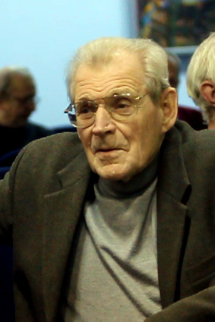
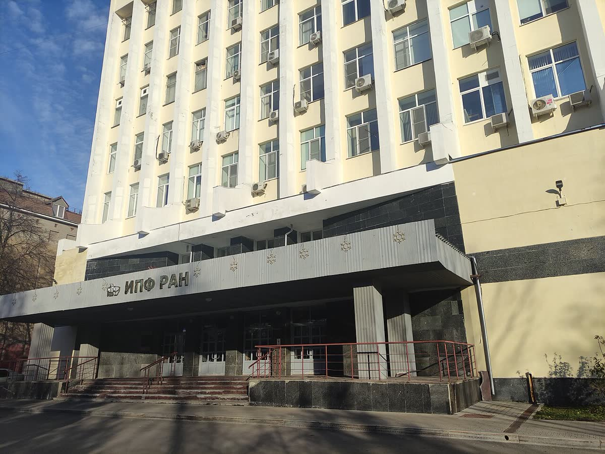
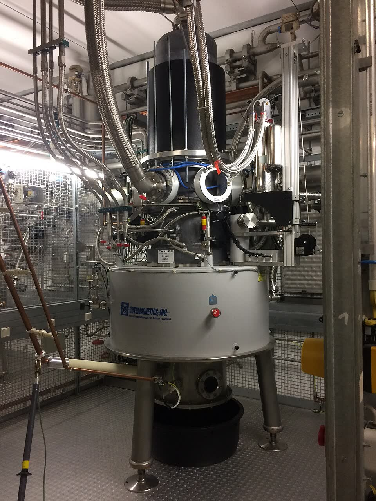

Из Горького — в термоядерные установки мира
Читается подряд. Нажми на удар — откроется подробный разбор с источниками.
Андрей Гапонов-Грехов родился 7 июня 1926 года в Москве, в семье физиков, а с 1933 года жил в Горьком.Узнать подробнееСвернуть

Андрей Викторович Гапонов-Грехов, 2010 год. Фото Артёма Коржиманова, Викисклад, CC BY-SA 3.0. Его родители — физики Мария Тихоновна Грехова и Виктор Иванович Гапонов. В 1945 году его перевели на только что созданный радиофизический факультет Горьковского университета. Факультет основала и первой возглавила его мать. В аспирантуре он учился у академика А. А. Андронова. В 1955 году защитил кандидатскую — и ему сразу присудили степень доктора наук.
Источник: ИПФ РАН, «Гапонов-Грехов Андрей Викторович, академик РАН» (страница памяти основателя института).
В 1958–1961 годах он построил теорию: электроны, кружащие в магнитном поле, могут не поглощать радиоволну, а усиливать её.Узнать подробнееСвернуть
Электрон в магнитном поле кружит, как грузик на нитке. Но частота его оборотов чуть-чуть зависит от энергии: чем быстрее электрон, тем он «тяжелее» и тем медленнее кружит. Из-за этой неравномерности поток таких «классических осцилляторов» может сгруппироваться и отдать свою энергию волне. В ИПФ РАН это называют так: теория индуцированного излучения классических нелинейных осцилляторов, новый принцип генерации и усиления волн.
Ту же мысль почти одновременно высказали Р. Твисс в Австралии (1958) и Ю. Шнайдер в США (1959).
Источники: ИПФ РАН, страница памяти А. В. Гапонова-Грехова; G. S. Nusinovich, M. K. A. Thumm, M. I. Petelin, «The Gyrotron at 50: Historical Overview», Journal of Infrared, Millimeter, and Terahertz Waves, 2014 (список литературы: Twiss 1958, Schneider 1959, Gaponov 1959).
Первыми такое излучение увидели в лампах с бегущей волной — в 1959–1960 годах, в Горьком и в США.Узнать подробнееСвернуть
Статья 1965 года с этого и начинается: индуцированное излучение спиральных электронов сначала наблюдали в электронных усилителях и генераторах бегущей волны. Она ссылается на доклад Гапонова в Москве в июне 1959 года, на работу Р. Пантелла 1959 года и на статью И. И. Антакова, В. М. Бокова, Р. П. Васильева и А. В. Гапонова 1960 года.
Источник: A. V. Gaponov, A. L. Gol'denberg, D. P. Grigor'ev, I. M. Orlova, T. B. Pankratova, M. I. Petelin, «Induced Synchrotron Radiation of Electrons in Cavity Resonators», JETP Letters, 1965, vol. 2, p. 267–269 (перевод статьи из «Писем в ЖЭТФ», т. 2, с. 430–435).
Чтобы поднять мощность, нужно было больше «активной среды», и горьковчане перешли к «открытым» резонаторам большого объёма.Узнать подробнееСвернуть
Опыт уже показал, что большую мощность можно получить и в обычных волноводах сечением порядка квадрата длины волны. Но дальше надо было наращивать объём «активной среды» — сечение электронного пучка. Поэтому авторы перешли к квазиоптическим резонаторам «открытого» типа. Глухих стенок со всех сторон у них нет, и сами они могут быть намного больше длины волны.
Источник: статья А. В. Гапонова и соавторов в «Письмах в ЖЭТФ», 1965, т. 2, вып. 9, с. 430–435; прочитан английский перевод — «Induced Synchrotron Radiation of Electrons in Cavity Resonators», JETP Letters, vol. 2, p. 267.
Пушка с коническим катодом закручивала электроны в тугую спираль, а плавно растущее магнитное поле раскручивало их ещё сильнее.Узнать подробнееСвернуть
Схема генератора по описанию и рисунку 1 статьи 1965 года: 1 — катод, 2 — излучающая поверхность, 3 — анод, 4 — резонатор, 5 — вывод мощности, 6 — коллектор, B — магнитное поле. Рисунок музея. У катода электроны получают вращательную энергию от поперечной составляющей электрического поля. Поля в пушке и на пути пучка меняются плавно, поэтому сохраняется так называемый адиабатический инвариант. Итог простой: во сколько раз выросло магнитное поле, во столько же выросла энергия вращения электронов.
Источник: Гапонов и др., Письма в ЖЭТФ, 1965, т. 2, с. 430–435, раздел «Электронный пучок» и рис. 1.
Первый генератор — отрезок прямоугольного волновода длиной 20 сантиметров: поле 3200 эрстед, волна 3,4 сантиметра и 6 ватт при токе 80 миллиампер.Узнать подробнееСвернуть
Пучок входил в резонатор с торца, через волновод, запредельный для этой волны, в максимум электрического поля. Второй, открытый конец резонатора переходил в широкий волновод, который одновременно выводил энергию и служил коллектором. Генерация шла на частоте вращения электронов. Напряжение пучка — 8 киловольт, вращательная скорость примерно втрое больше продольной. Итог — 6 ватт.
Источник: Гапонов и др., Письма в ЖЭТФ, 1965, т. 2, с. 430–435, разделы «Резонаторы» и «Результаты».
Второй генератор — «бочка», открытый резонатор: на удвоенной частоте вращения, при поле 4500 эрстед и волне 1,2 сантиметра он дал 190 ватт.Узнать подробнееСвернуть
Здесь электроны работали на второй гармонике: волна в резонаторе колебалась вдвое чаще, чем они кружили. Энергию выводили волноводом через отверстие в боковой стенке. При токе 320 миллиампер и напряжении 19 киловольт «бочка» дала 190 ватт. График в статье показывает: мощность прибавлялась, когда вращение ускорялось, а продольное движение замедлялось. Росла она и с током — так пишут авторы.
Источник: Гапонов и др., Письма в ЖЭТФ, 1965, т. 2, с. 430–435, рис. 3 и раздел «Результаты».
На 190 ваттах рост мощности остановила не физика, а охлаждение генераторов.Узнать подробнееСвернуть
Находка дняВ статье прямо сказано: дальнейшему росту мощности мешали трудности охлаждения генераторов, а в генераторе на основной частоте ещё и разряд в остаточном газе. Те же причины не дали поднять электронный КПД до предсказанных теорией 19 %. По числам самой статьи КПД вышел около 1 % у первого генератора и около 3 % у второго. Предел оказался инженерным, а не физическим. Отвод тепла остался трудностью и через полвека: выходное окно мегаваттных гиротронов ИТЭР делают из искусственного алмаза.
Источник: Гапонов и др., Письма в ЖЭТФ, 1965, т. 2, с. 430–435 (статья поступила 9 сентября 1965 года). КПД посчитан музеем: 6 Вт ÷ (80 мА × 8 кВ) и 190 Вт ÷ (320 мА × 19 кВ).
Излучение спиральных пучков в резонаторе раньше видели и другие, но горьковские опыты шли на большей мощности — так сказано в самой статье.Узнать подробнееСвернуть
Статья ссылается на опыт Дж. Хиршфилда и Дж. Уочтела в США (Physical Review Letters, 1964) и И. Ботта (Physics Letters, 1965) и пишет, что горьковские эксперименты проведены при более высоком уровне мощности, чем у них. Обзор 2014 года писали физики-гиротронщики из США, Германии и России, в их числе соавтор статьи 1965 года М. И. Петелин. Место рождения первого гиротрона у них — Горький.
Источники: Гапонов и др., Письма в ЖЭТФ, 1965, т. 2, с. 430–435 (ссылки 10 и 11); Nusinovich, Thumm, Petelin, «The Gyrotron at 50: Historical Overview», 2014.
«До 1970-х годов гиротроны были просто красивыми научными приборами», — рассказывал в 2020 году директор ИПФ РАН Григорий Денисов; потом их предложили для нагрева плазмы.Узнать подробнееСвернуть

Главный вход Института прикладной физики РАН имени А. В. Гапонова-Грехова, Нижний Новгород, 2023 год. Фото Артёма Коржиманова, Викисклад, CC BY 4.0. Нагревать гиротронами плазму токамаков предложили в Курчатовском институте. Это и подтолкнуло разработку. В 1977 году из Радиофизического института выделился Институт прикладной физики АН СССР; его основал и до 2003 года возглавлял Гапонов-Грехов. Работы по мощным источникам микроволн, которыми он руководил, трижды получали Государственные премии СССР и России.
Источники: «Страна Росатом», Н. Фетисова, О. Ганжур, «Первую плазму термоядерного реактора ИТЭР зажгут российские гиротроны», 9 сентября 2020; ИПФ РАН, страница памяти А. В. Гапонова-Грехова; «Страна Росатом», «Дойти до дейтерия: как меняется международный проект ИТЭР», 24 декабря 2024 (название института).
В 1992 году нижегородцы основали фирму «Гиком» и первый гиротрон отдали за границу практически бесплатно — чтобы его увидели в работе.Узнать подробнееСвернуть
Город, по воспоминанию Литвака, открыли для иностранцев в 1990 году, а в 1991-м финансирование науки «устремилось к нулю». Французская Thomson-CSF предлагала делать гиротроны вместе: прибор нижегородский, а на нём — её знак и 30 % выручки институту. Нижегородцы отказались и пошли сами: в «Гиком» вошли около тридцати человек, причастных к созданию гиротронов или к их применению, среди акционеров — Гапонов-Грехов. После пробной поставки они выиграли тендеры в Италии, Германии, Японии и США.
Источник: «Троицкий вариант — Наука», А. Литвак, О. Орлова, «Как вышли в мир гиротроны из Горького», 8 марта 2016 (А. Г. Литвак — в 1992 году сооснователь и вице-президент «Гикома»).
Для ИТЭР Россия делает восемь из 24 гиротронных систем по мегаватту, и первые четыре в конце 2024 года уже монтировали во Франции.Узнать подробнееСвернуть

Мегаваттный гиротрон на 140 ГГц у стелларатора Wendelstein 7-X (прибор фирмы Thales). Фото Z6ehswhha5HGRTd, Викисклад, CC BY-SA 4.0. Для ИТЭР нужен был гиротрон мощностью 1 мегаватт на частоте 170 гигагерц с КПД 50 % и импульсом в тысячу секунд. Самым трудным оказался КПД: к началу 2010-х российские разработчики вышли на нужные параметры, а КПД отечественных гиротронов — 55 %. Отвод тепла остался трудностью и через полвека: выходное окно делают из искусственного алмаза — его теплопроводность в пять раз выше, чем у меди, и диск, охлаждаемый по краю, остаётся холодным целиком. В новом плане ИТЭР работа на проектных параметрах начнётся в 2034 году, и гиротронов, по оценке «Росатома», понадобится 80 или даже 87 вместо 24.
Источники: «Страна Росатом», «Первую плазму термоядерного реактора ИТЭР зажгут российские гиротроны», 2020; «Страна Росатом», «Дойти до дейтерия: как меняется международный проект ИТЭР», 24 декабря 2024; «Троицкий вариант — Наука», «Как вышли в мир гиротроны из Горького», 2016.